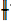
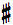
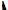
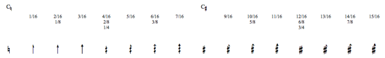
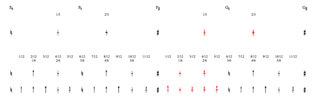
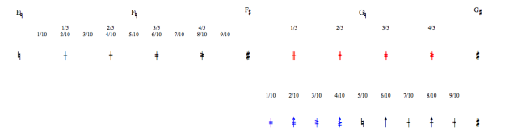
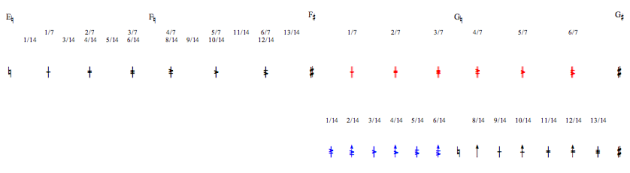

OpenMusic DocumentationHiérarchie de section : OM 6.6 User Manual > Score Objects > Score Editors > Microintervals Notation
OpenMusic DocumentationHiérarchie de section : OM 6.6 User Manual > Score Objects > Score Editors > Microintervals Notation
Navigation : page précédente | page suivante
Attention, votre navigateur ne supporte pas le javascript ou celui-ci à été désactivé. Certaines fonctionnalités de ce guide sont restreintes.
Microintervals Notation
Conventions
Scales
OM offers all scales approximations from 1/2 to 1/8 tone, as well as 1/10, 1/12, 1/14 and 1/16 tone approximations.
Accidental Types
All accidentals are ascending, that is, based on naturals and sharps .
Microintervals and Tonality
Microtonal scales are not available in a tonal context.
To cancel the choice of a tonality, press Shift + t. The original "atonal" configuration is be restored.
Accidentals Charts
Note
Scales that don't comprise semitones – 1/3, 1/5, 1/7 and their derived scales can be tricky, for they sometimes have different types of accidentals.
Notation Principles
Naturals are replaced by plain vertical lines – for instance : .
Incrementations of sharps are indicated by two vertical lines – for instance :.
1/4 tone scale :
the number of vertical lines indicates incrementations of 1, 2 or 3 quarter tones – for instance .
1/8 and 1/16 tone scales :
three different arrowheads indicate incrementations of a 1/16th , 1/8th and 3/16th tones of naturals and sharps.
1/3 tone scale :
incrementations of 1 or 2 thirds of tone are shown by the number of additional horizontal lines – for instance .
1/6 and 1/12 tone scales :
they combine arrowheads with horizontal lines.
1/5, 1/7 tone scale and their multiples :
they use additional combination of horizontal lines.
1/2 Tone and Elementary Multiples

Accidentals of the half tone scale and its multiples.Zoom
{kind=link}
1/3 Tone and Elementary Multiples

Accidentals of the third tone scale and its multiples.Zoom
{kind=link}
1/5 and 1/10 Tone

Accidentals of the fifth and tenth tone scales.Zoom
{kind=link}
1/7 and 1/14 Tone

Accidentals of the seventh and fourteenth tone scales.Zoom
{kind=link}
Références :
Plan :
Navigation : page précédente | page suivante
A propos...(c) Ircam - Centre Pompidou